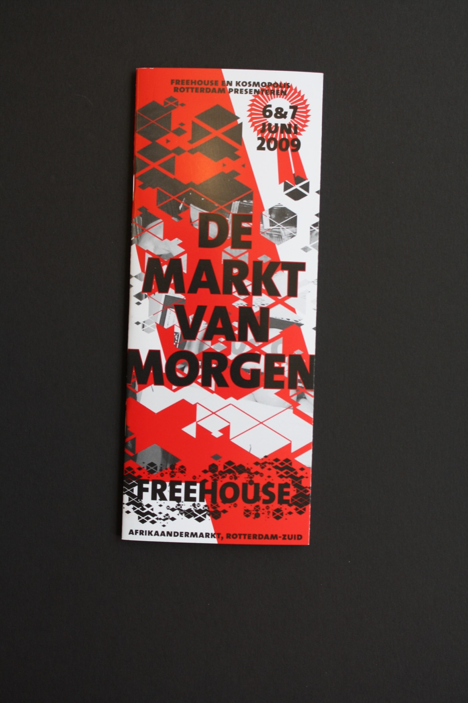
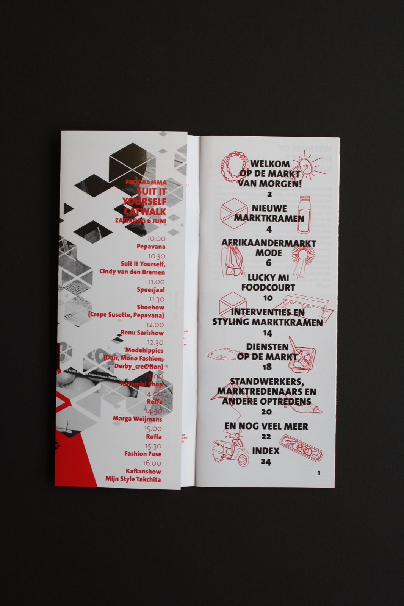
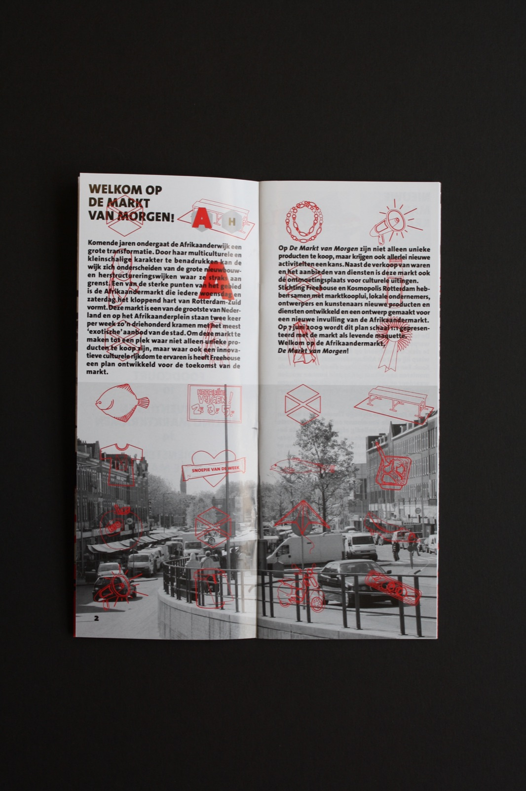
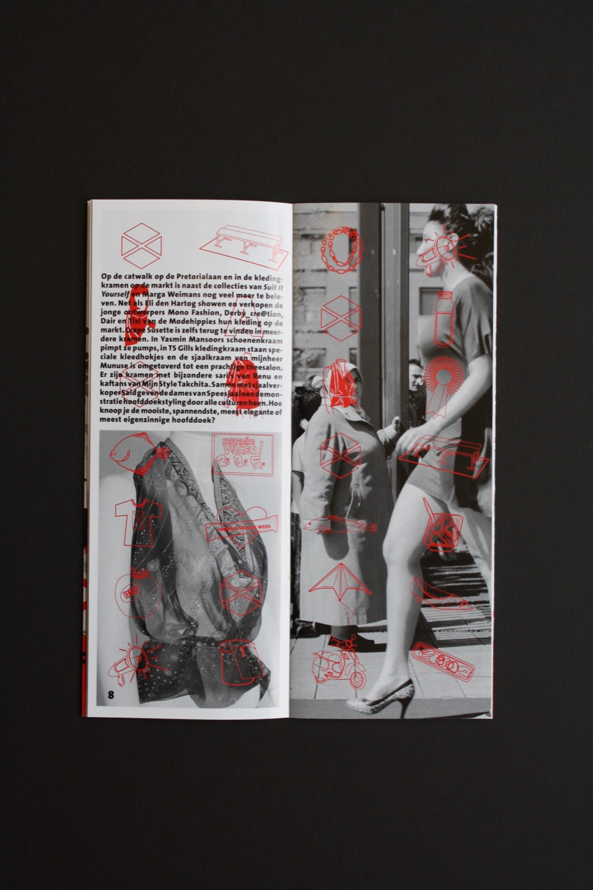
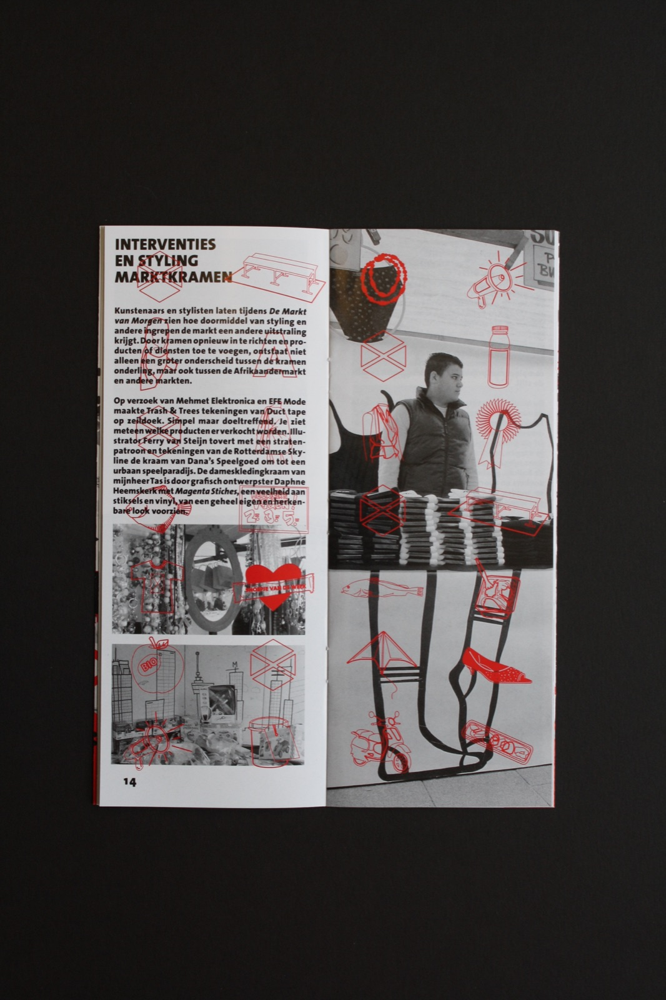
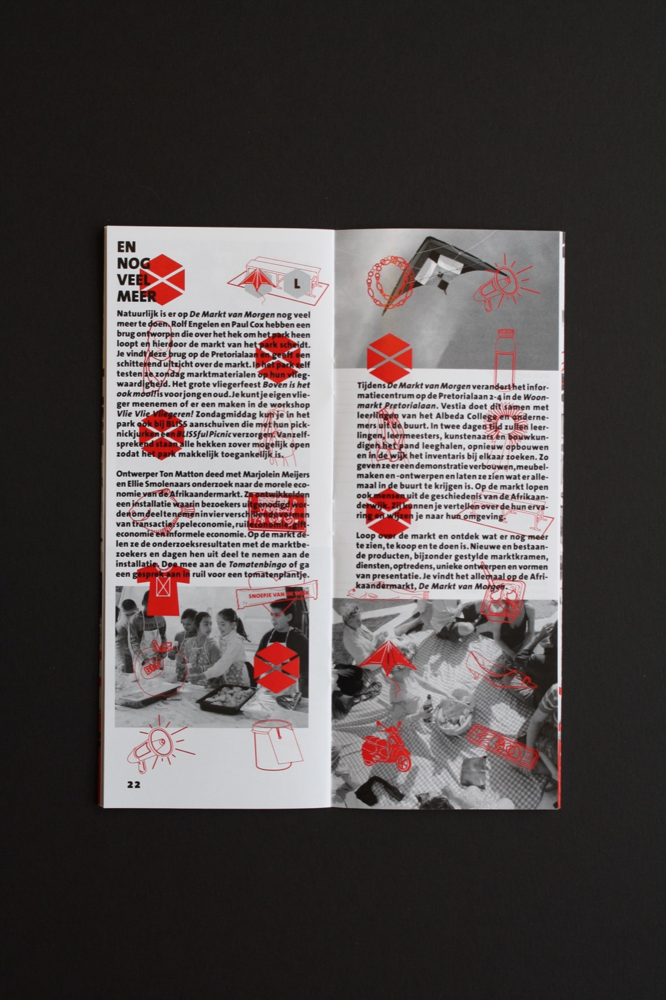
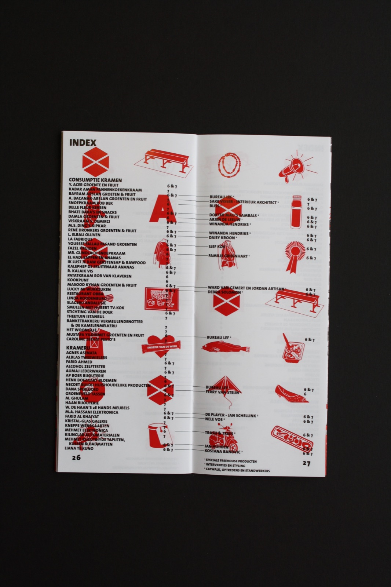
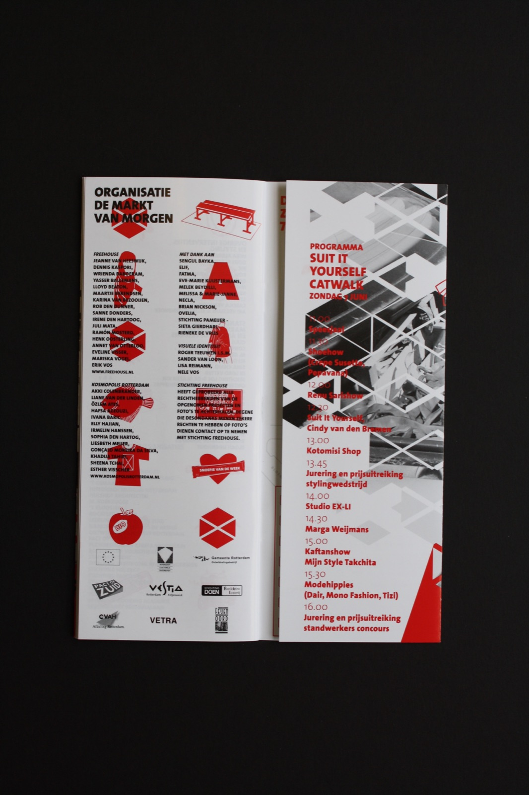
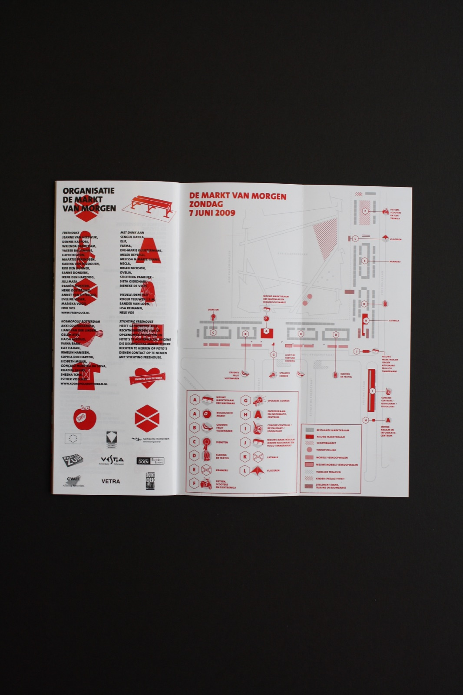
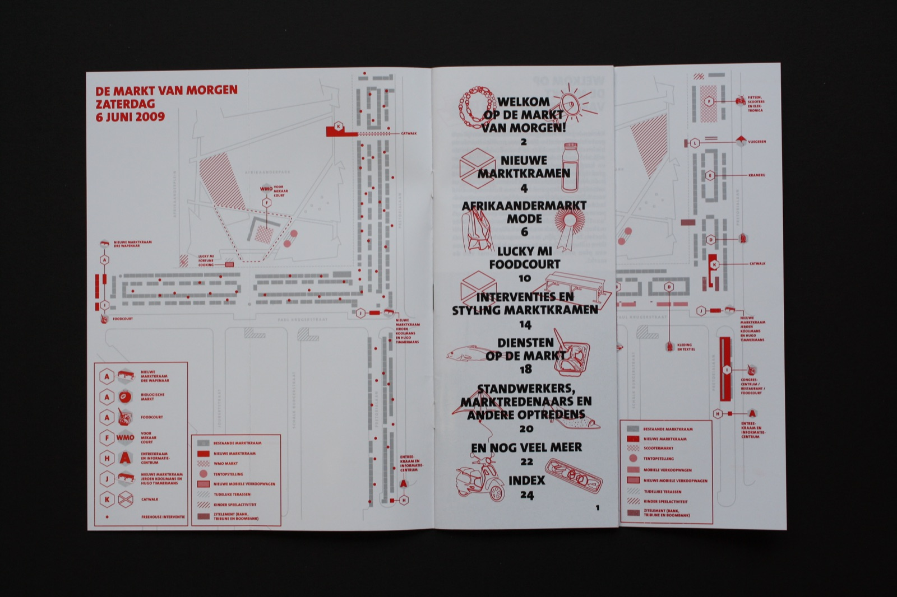
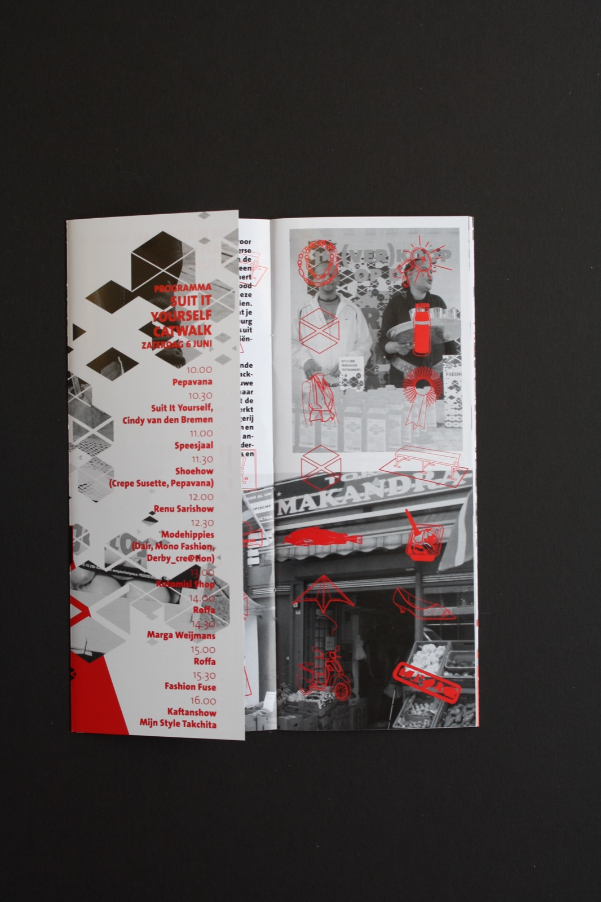
De Markt van Morgen is a bustling city market with new products, new services, fashion shows, performances, special sales vehicles, market stalls and much more.
The Rotterdam Afrikaandermarket is one of the largest markets in the Netherlands. At Afrikaanderplein you can find two times a week about 300 booths with the most 'exotic' offers in the city.
To make this market not only a place where unique products are for sale but where also innovative cultural wealth can be experienced Freehouse created a plan for the future of this market. During the weekend of 6 and June 7 this plan was presented as a living model.
The background pattern of icons interacts with the different sections in the guide and also represents the different activities during the market located on the map.
The map which is on the interior of the envelope can be found here
Design made at Roger Teeuwen Ontwerper's
Rotterdam / guide